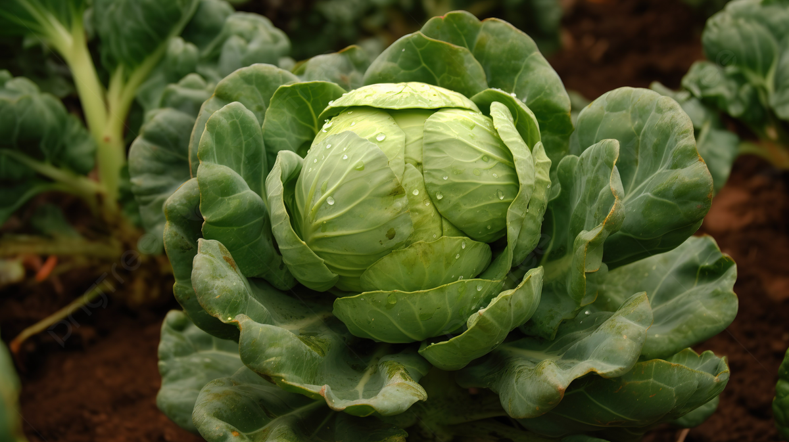

Капуста является одной из наиболее распространённых овощных культур. Она используется в свежем виде, для квашения и приготовления различных блюд.
Капуста содержит витамины, клетчатку и полезные микроэлементы.
Рассаду высаживают весной после окончания заморозков.
С июля по октябрь в зависимости от сорта.
Богата витамином C, клетчаткой и минеральными веществами.
Россия, Беларусь, Германия, Польша и другие страны Европы.
Предпочитает умеренный климат и достаточное увлажнение.